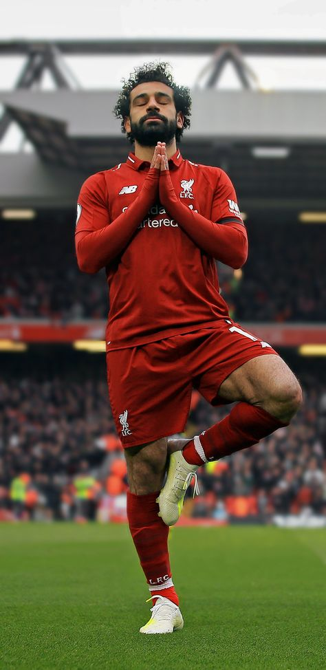
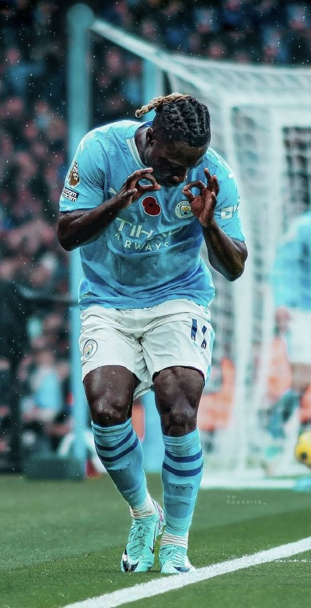
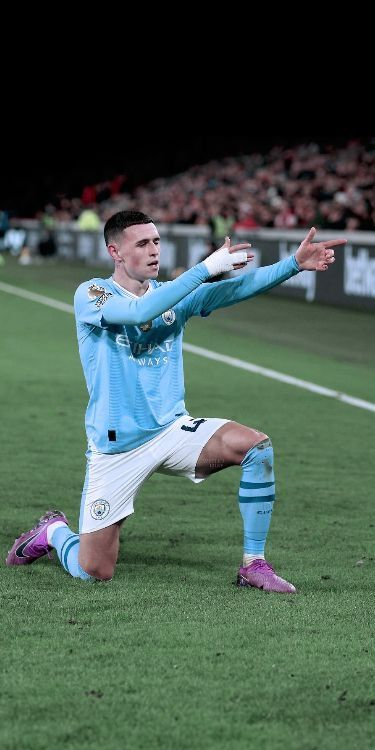
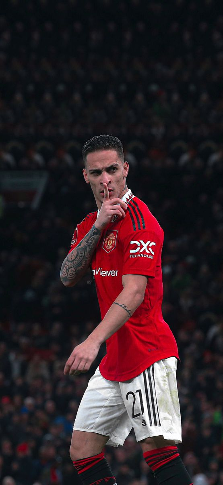
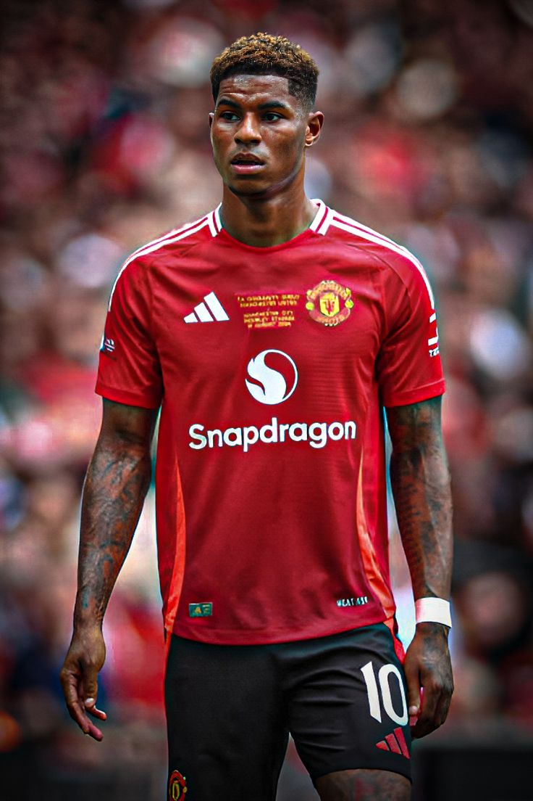
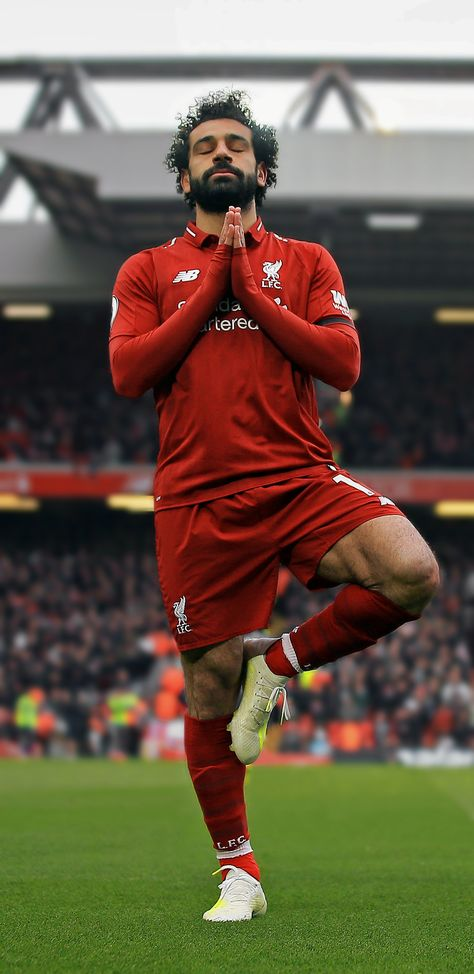
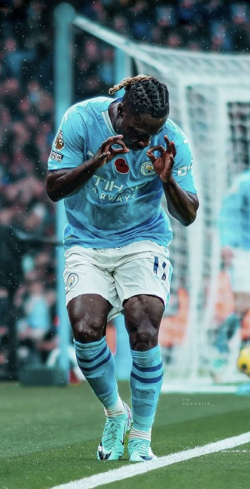
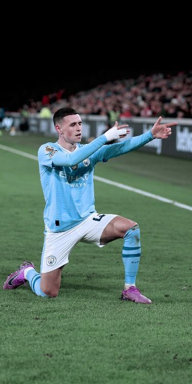
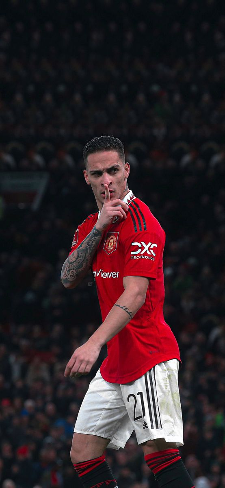
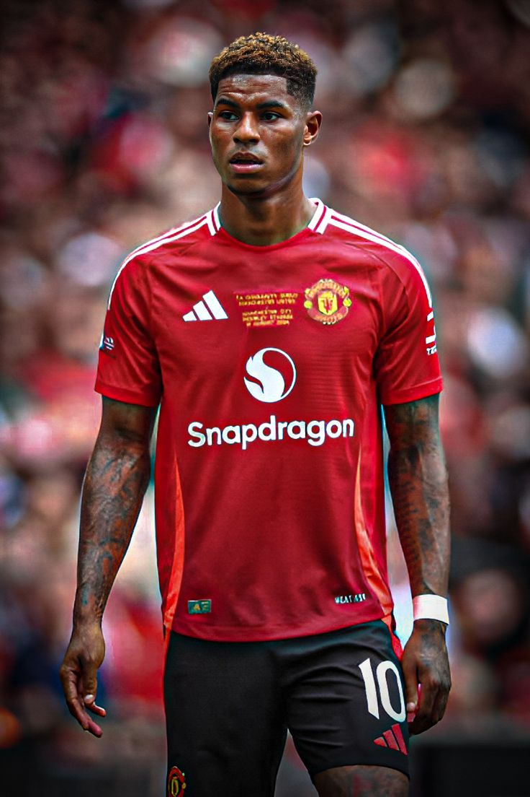

Cole Palmer: Palmer, a talented midfielder currently playing in Chelsea, is known his creativity and vision on pitch, which proves a score of 16 games and 11 goals.
Kieran Trippier: Right-back for Newcastle United, he is admired for the way he launches pin-point crosses and exerts dominance over set plays.
Emiliano Martínez: The Aston Villa goalkeeper celebrated for his reflexes was also among the winning group in the World Cup-Clutch penalty saves were some of his top actions.
Adama Traoré: A winger with blistering pace, Traoré currently plays for Fulham, often dazzling defenders with his speed and strength.
Jamie Vardy: The Leicester City striker is a Premier League legend, known for his incredible goal-scoring record and tenacious playstyle.
Mohamed Salah: A prolific forward for Liverpool, Salah consistently delivers goals and assists, cementing his place as one of the world's best attackers.
Jérémy Doku: The young winger for Manchester City is a rising star, admired for his dribbling skills and ability to create chances.
Phil Foden: A versatile attacking midfielder for Manchester City, Foden is a key playmaker with an eye for goal and a knack for big moments.
Antony: The Brazilian winger for Manchester United is known for his flair, skillful dribbles, and ability to score from the flanks.
Marcus Rashford: A dynamic forward for Manchester United, Rashford is celebrated for his pace, finishing ability, and contributions off the field.
Click here to read more about theese best performing players


 








